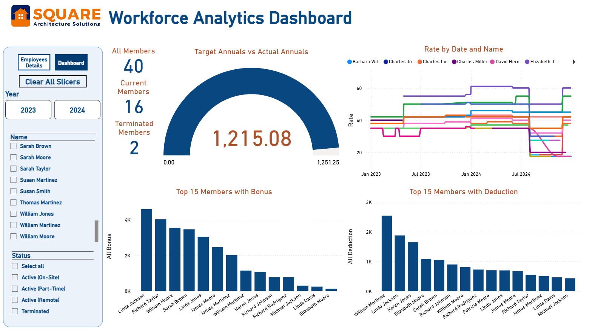
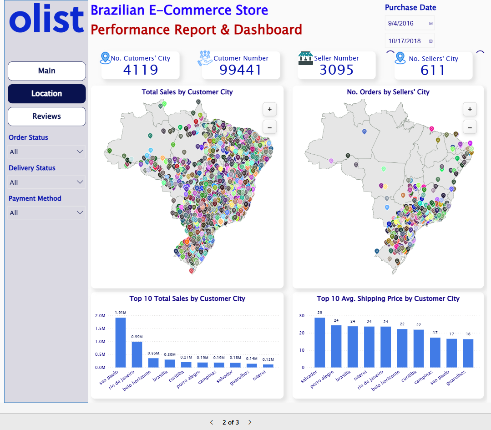
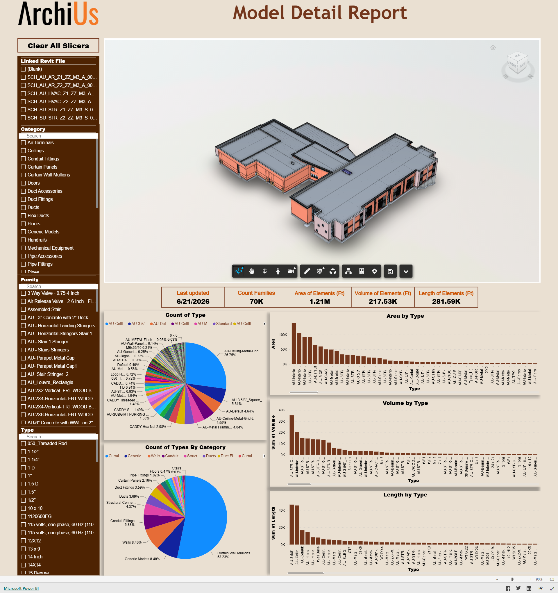

SELECTED WORK & CAPABILITIES
Projects & skills.
A closer look at the reporting challenges I've worked on and the tools I use to turn data into practical insights.
PORTFOLIO
Analytics projects

Workforce Analytics Dashboard
An HR analytics solution covering employee compensation, salaries, hourly rates, bonuses, deductions, and leave data across 2023 and 2024.

Brazilian E-Commerce Analytics Dashboard
An end-to-end analysis of the Olist Brazilian E-Commerce dataset, covering sales performance, customer and seller locations, delivery orders, products, and customer reviews.

BIM 3D Model Detail Report
An interactive Power BI report featuring a 3D school BIM model, bringing architectural, structural, and plumbing model data together to explore elements, parameters, details, and quantities.
TOOLKIT
Skills that make data work.
Choose a category to explore the tools and methods I use throughout an analytics workflow.
BI & Visualization
Transforming metrics into readable, decision-focused dashboards and reports.